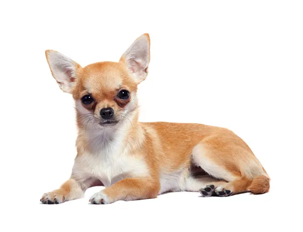
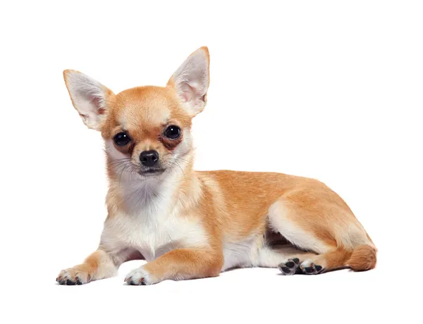

Si quieres ver más imágenes de perritos, da clic en este enlace.
3 cosas que los perritos aman
3 cosas que los perritos odian
¿Tu perrito es cachorro o es adulto?
¿Qué tipo de personalidad tiene tu perro?
 
